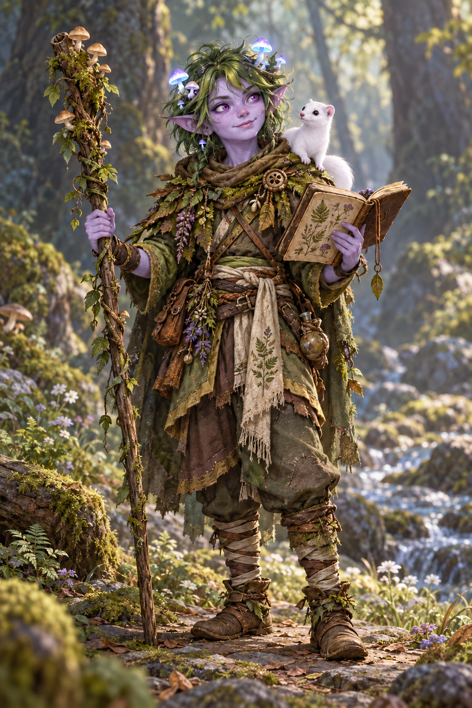

Guardião da natureza, pesquisador curioso e aprendiz de paladino. Entre perguntas, cogumelos e uma doninha branca, procura seu lugar no mundo.
Gnomo da florestaDruida 2 · LuaPaladino 128 anosSábio
FOR e CAR ajustados para 13 com autorização informada do mestre. SAB 16 preservada. Os PV usam valores fixos; a besta foi considerada leve. Confirme esses dois dados na mesa.

PV gnômicos25 / 25
Classe de armadura15
Deslocamento7,5 m
Iniciativa+2
Percepção passiva15
CD de druida13
Forma gnoma. Arma e escudo ocupam mãos; guarde a arma para magias com gestos sem material.
Recursos restantes
Remover ou vestir escudo custa uma ação. Em forma animal, o equipamento está fundido e não aumenta CA.
Curto restaura Forma Selvagem; cura por Dados de Vida é manual. Longo restaura PV e recursos; recupere apenas 1 Dado de Vida gasto (metade de 3, para baixo). Reverter antes de descansar nesta interface.
Dados de Vida e salvaguardas contra morte
PV e Forma Selvagem
Primeiro desconta temporários. Forma a 0 reverte e transfere excedente. Conferir concentração após cada origem de dano: CON contra CD maior entre 10 e metade do dano.
Cada botão registra recurso, não resolve a economia de ações automaticamente. Transformar, reverter e curar pela Lua exigem ação bônus e competem no turno. A duração é até 1 hora por uso.
Ataques na forma gnoma
Ataque
Acerto
Dano
Alcance
Condição
Durante meu turno
Ação
Atacar; conjurar magia de ação na forma gnoma; Cura pelas Mãos; Sentido Divino; Desengajar; Disparada; Esquivar; Ajudar; Esconder-se; Procurar ou Preparar, conforme a situação.
Urso: Ataques Múltiplos é uma ação própria, com uma mordida e uma garra.
Ação bônus
Uma por turno: Forma Selvagem da Lua; reverter; curar a forma com espaço; Bordão Místico; Palavra Curativa. Conjurar uma magia com ação bônus limita as outras magias do turno a truque de uma ação.
Reação
Ataque de oportunidade contra inimigo visível que sai do alcance, quando provoca: apenas um ataque corpo a corpo. Ou liberar ação preparada no gatilho. Sem Estilo de Proteção ou magia de reação nesta ficha.
Exemplos legais
Controle: com mão livre, ação Constrição (1 espaço, FOR CD 13) + ação bônus virar urso (1 uso). Só ataca no próximo turno.
Dano imediato: ação bônus virar urso + ação Ataques Múltiplos, dois d20+5, danos 1d8+4 e 2d6+4.
Socorro: na forma gnoma, ação bônus Palavra Curativa (1 espaço, 1d4+3) + ação Cura pelas Mãos (reserva até 5), ou um ataque.
Fuga: lobo atroz usa ação Desengajar e anda 15 m. Disparada permite 30 m, mas não evita oportunidades.
Atributos
Bônus de proficiência +2, pelo nível total 3.
Perícias e salvaguardas
Perícia
Modificador
Proficiência
Salvaguardas gnômicas
FOR +1 · DES +2 · CON +2 · INT +4 · SAB +5 · CAR +1. Somente INT e SAB são proficientes.
Contra magia, salvaguardas de INT/SAB/CAR têm vantagem por Esperteza Gnômica. CON para concentração não recebe esse benefício.
Proficiências e idiomas
Armas simples e marciais; armaduras leves/médias e escudos, respeitando restrição druídica ao metal; kit de herbalismo (proficiência, kit não concedido).
Comum, Gnômico, Anão, Élfico e Druídico. Visão no escuro 18 m. Comunicação simples com bestas Pequenas ou menores.
PV calculados
(8+2) + (5+2) + (6+2) = 25. Dados de Vida: 2d8 e 1d10. Valores fixos provisórios.
Identidade
Ideal: equilíbrio da natureza. Ligações: deusa, natureza, família e pessoas de origem. Defeitos: curiosidade excessiva e bondade que expõe a perigo. Neutro e bom sugerido.
Equipamentos
Classe: escudo de madeira, bordão, couro, foco ramo de visco, pacote de estudioso e pacote de aventureiro conforme redação do PDF. Sábio: tinta, pena, faca pequena, carta de colega falecido, roupas comuns e 10 po iniciais.
Posses informadas: lente de aumento, machadinha, azagaias, besta e caderno. Não duplicar escudo. Dinheiro atual, quantidade de azagaias/virotes e tipo da besta pendentes. Lente dá vantagem ao inspecionar item pequeno ou muito detalhado; não dá bônus numérico.
Compras possíveis, ainda não aplicadas: gibão de peles 10 po (CA 16 com escudo), kit de herbalismo 5 po, 20 virotes 1 po, lã e trevo para componentes. Sem itens mágicos gratuitos.
Referências e decisões de mesa
Conjuração
CD 13 · ataque mágico +5 · 5 preparadas · 3 espaços de 1º nível · Ilusão Menor racial CD 12. Truques: Bordão Místico, Orientação e Ilusão Menor. Paladino 1 não concede magias.
Preparação muda ao terminar descanso longo. As marcações não autorizam troca durante combate.
Preparações alternativas e opções futuras
Combate: trocar Detectar Magia por Onda Trovejante. Exploração: Detectar Magia, Falar com Animais, Passos Longos, Bom Fruto e Palavra Curativa. Suporte: Palavra Curativa, Curar Ferimentos, Bom Fruto, Detectar Magia e Fogo das Fadas. Trocar só após descanso longo, mantendo no máximo 5.
Futuras, indisponíveis agora: druida 3 permite magias de 2º como Passos sem Pegadas, Pele de Árvore e Raio Lunar; todas exigem concentração. Paladino 2 concede Estilo de Luta e Destruição Divina, sem dar acesso a magias de 2º nível nessa combinação.
Ilusão Menor usa V, M no PDF fornecido; não foi corrigida por fontes externas. Foco druídico não é automaticamente foco racial: tenha lã. Magias S sem M exigem mão livre. Detectar Magia e Falar com Animais preparados podem ser rituais com +10 minutos, sem espaço.
Formas documentadas
ND até 1 · apenas bestas já vistas · sem voo ou natação · 2 usos por descanso curto/longo · duração até 1 hora · ação bônus. Urso Marrom e Lobo Atroz já foram vistos. Marque outros encontros somente após confirmar com o mestre.
Vistos, mas indisponíveis: Águia Gigante tem voo (libera em druida 8); Sapo Gigante tem natação e ficha ausente no PDF permitido; Cão da Morte é monstruosidade. A doninha não possui bloco no livro permitido.
Transformação e características de paladino
FOR/DES/CON da besta; INT 15, SAB 16 e CAR 13 mantidos. Percepção +5, passiva 15, salvaguardas INT +4 e SAB +5. Outros sentidos especiais dependem do bloco da besta.
Equipamento fundido não funciona. Não conjura em Forma Selvagem; concentração anterior continua. Sentido Divino é característica sem requisito explícito de mãos/fala. Cura pelas Mãos depende de o mestre aceitar capacidade física de tocar/canalizar na forma. Reserva não aumenta.
A doninha é criatura, não equipamento: não se funde. Não usar como familiar ou ação adicional automática.
Cogumelos feéricos de Luci
Proposta de regra da casa — aguardando validação do mestre. O mestre autorizou criar a tabela. Os efeitos, o dano e os detalhes de aplicação abaixo ainda precisam ser validados. Não são características oficiais de druida, paladino ou gnomo.
Ao comer ou tocar um cogumelo ativado, a proposta é rolar 1d6 e consultar o resultado.
Tabela de efeitos dos cogumelos · 1d6
d6
Cogumelo
O que a pessoa sente ou vê
Aplicação proposta
1
Bruma de Sonho Feérico
Uma névoa morna parece envolver a cabeça. O corpo fica leve, os pensamentos se espalham e o tempo parece andar devagar. Detalhes banais tornam-se fascinantes; a pessoa perde o fio da conversa e pode rir de coisas sem graça. É uma sensação de estar muito chapado por uma erva feérica imaginária, sem orientar o uso de substâncias reais.
Sensação narrativa; não aplica automaticamente envenenado, incapacitado ou perda de ações.
2
Véu das Roupas Perdidas
A pessoa passa a enxergar os outros seres como se estivessem pelados, em uma ilusão caricatural, sem detalhes íntimos. Capas, roupas e armaduras parecem ter desaparecido só para ela. Pode achar que chegou a uma festa com um código de vestimenta muito estranho.
As roupas continuam no lugar. Armaduras mantêm a CA; a visão não revela objetos escondidos nem altera a proteção.
3
Fofura Absoluta
O mundo parece feito de pelúcia e doces: lâminas ganham bordas de algodão, monstros parecem bichinhos adoráveis e o sangue lembra geleia brilhante. Até o som de uma espada batendo parece um pequeno “puf”. A aparência acolhedora pode tornar a cena absurdamente engraçada.
Apenas percepção alterada: armas, criaturas e perigos conservam seus efeitos reais. Não obriga a tocar, confiar ou se aproximar.
4
Pimenta do Caldeirão
Um gosto de pimenta brutal invade a boca, como se tivesse mordido uma brasa temperada. O rosto esquenta, os olhos lacrimejam e o suor se torna tão abundante que a pele parece oleosa, com um brilho escorregadio. A pessoa pode abanar a boca e procurar algo para beber.
Não causa dano adicional. A oleosidade não concede bônus, não impõe quedas e não cria óleo aproveitável.
5
O Rastejador Atrás dos Olhos
Só a pessoa vê o chão se abrir numa fenda negra. O ruído do mundo desaparece; algo enorme raspa suas garras sob a terra. Urdlen, o Rastejador Cego, emerge como uma presença pálida e sem olhos, coberta de poeira de sepulcro. Ele inclina a cabeça como se farejasse uma cobiça secreta, atravessa o peito da pessoa com uma garra feita de sombra e desaparece. O chão nunca se abriu para os demais, mas a dor ficou.
Proposta de regra da casa: 1d4 de dano psíquico, uma única vez, imediatamente após o resultado. A visão é breve; não invoca uma divindade real, não cria criatura nem causa dano a terceiros.
6
Luci, o Terror do Bosque
Só para a pessoa, o sorriso de Luci se alonga, seus cogumelos parecem olhos que a acompanham e sua sombra cresce como uma floresta inteira. Sua voz soa perto demais, mesmo quando ele está longe. A presença de Luci desperta um medo intenso e a certeza irracional de que há algo terrível por trás de sua aparência gentil.
Medo narrativo: a reação pertence a quem interpreta a pessoa afetada. A condição amedrontado, desvantagem e fuga obrigatória não são aplicadas automaticamente; precisam de acordo específico com o mestre.
Duração proposta
10 minutos para os resultados 1, 2, 3, 4 e 6. O resultado 5 é uma visão breve com 1d4 de dano psíquico aplicado uma única vez; não se repete a cada turno.
Visões e efeitos reais
As visões são percebidas apenas pela pessoa afetada. Elas não removem roupas, alteram a CA, tornam armas inofensivas ou concedem informações ocultas. O resultado 4 também pode ser descrito com suor visível, a combinar com o mestre. Fora do dano proposto no resultado 5, não há penalidades ou condições automáticas.
Urdlen é usado aqui como tema narrativo fornecido pelo jogador. A cena é criação para a campanha, não uma manifestação oficial ou uma regra extraída do Livro do Jogador.
Para validar com o mestre
Confirmar ativação por toque ou ingestão, quantidade disponível, duração, possibilidade de resistir e o dano psíquico de 1d4. Decidir separadamente se o medo do resultado 6 terá alguma consequência mecânica. Esta tabela não define CD, salvaguarda, custo de ação ou doses por descanso.
O caderno de Luci
Perguntas, desenhos descritos, cogumelos, pessoas e pistas. O caderno não concede magias de mago nem bônus automático.
Salvar a sessão
Dados ficam neste navegador quando o armazenamento local estiver disponível. Exporte uma cópia para levar a outro dispositivo. Os arquivos DOCX e Markdown continuam editáveis separadamente.
História revisada
Ganchos para o mestre
O que Yares queria impedir que Luci soubesse? Por que Navela concordou? O que Resmus realmente pretendia? Qual magia antiga era censurada? Como família, Norman e Alyda reagiram à fuga? Esses mistérios permanecem abertos.